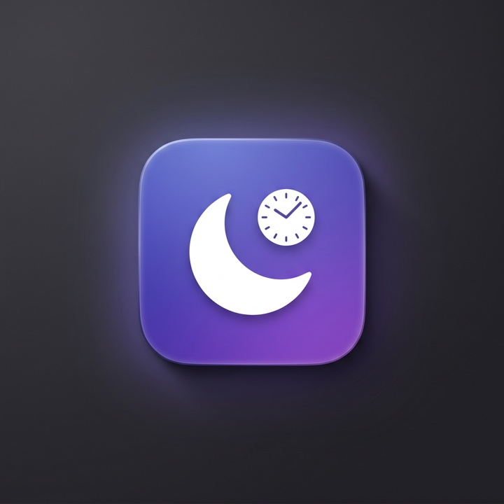
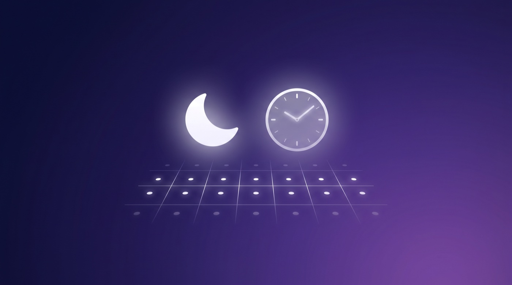

Turn macOS & iOS Focus modes on and off automatically from your shift calendar — no fixed schedule required.
Shifts that move around — different days, hours, locations — don't fit Apple's time- or location-based Focus automations. RosterFocus reads your shift events from a calendar and flips the right Focus while you're on shift, then off when it ends. It follows you to your iPhone via Share Across Devices.
Triggers on calendar events — variable days, hours, and overnight or multi-day shifts.
Map calendars and title keywords to different Focus modes: On-Call → Do Not Disturb, Work → Work, Gym → Fitness.
Start a Focus a few minutes before a shift, or hold it for a while after.
Acts only on a change — kill a Focus mid-shift and it stays off until the next boundary.
A friendly menu-bar app, or a headless CLI for an always-on Mac mini. Same engine, shared config.
Runs entirely on your Mac. No accounts, no servers. Open-source and MIT-licensed.

Apple lets only the Shortcuts app flip a Focus, and no app can create one. So RosterFocus automates the part it can — watching your calendar and deciding which Focus should be on — and runs a Shortcut you set up to do the toggle. The Focus then syncs to your iPhone.
shift calendar → decide the Focus → run your Shortcut → syncs to iPhone
The app's wizard walks you through it. A few one-time steps that only you can do (macOS has no API for them):
Work (the wizard opens this for you).⬇︎ Download RosterFocus Full setup guide
Not affiliated with Apple. “Focus”, “Shortcuts”, macOS and iOS are trademarks of Apple Inc.